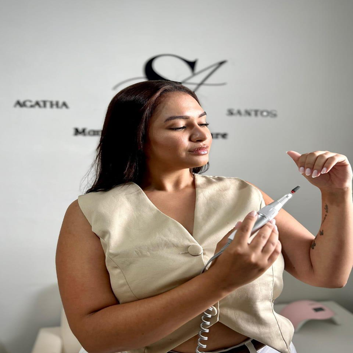
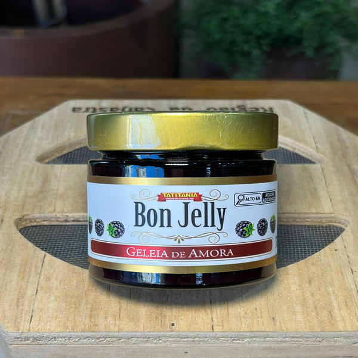

Pessoas
Fotos Profissionais
Ensaios, posicionamento e fotos para redes sociais.
Trabalhos organizados por categoria para o site não quebrar e as imagens manterem proporção.

Ensaios, posicionamento e fotos para redes sociais.

Imagens para delivery, cardápio, comércio e redes sociais.
Criação de identidade visual para marcas e negócios.

Artes para datas especiais, eventos e campanhas.
baixo alcance
01 – Identidade visual
Analiso e crio identidade visual para fortalecer o posicionamento do cliente.
02 – Criação de conteúdo
Transformo momentos, produtos e eventos em conteúdos estratégicos para redes sociais.